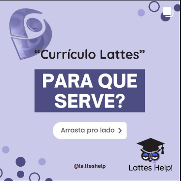

Com as novas tecnologias e incentivos à área de pesquisa, o currículo Lattes começou a ser utilizado por universidades, faculdades, centros de pesquisa e instituições ligadas à pesquisa para avaliar estudantes, docentes e pesquisadores.
Currículo Lattes | Cadastro e Atualização

latteshelpcontato@gmail.com
Muitos sabem que o currículo Lattes é um diferencial, mas poucos têm disponibilidade ou facilidade para criar ou mantê-lo atualizado. Por isso, coloco-me à disposição para ajudá-los com o que for necessário. Ficou interessado? Entre em contato e mande "help!".
Contato
Mais recentes
